Como registrar suas peças usando apenas o celular.
Suas fotos já têm identidade: luz natural, texturas e um cenário que é só seu.
Este guia transforma isso em método.
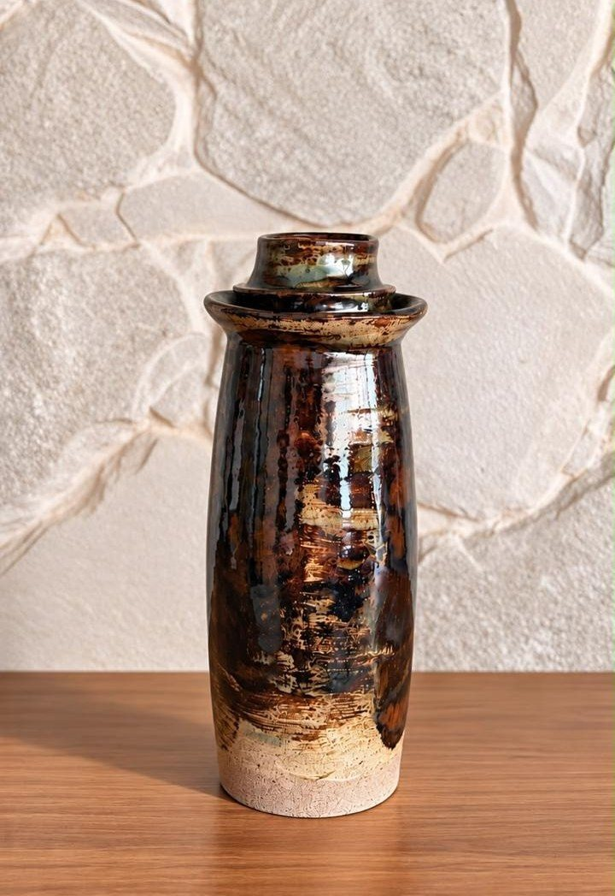
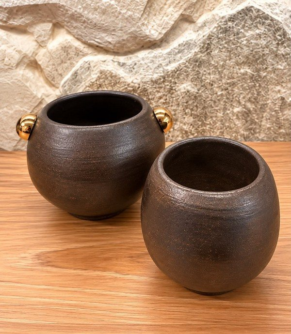
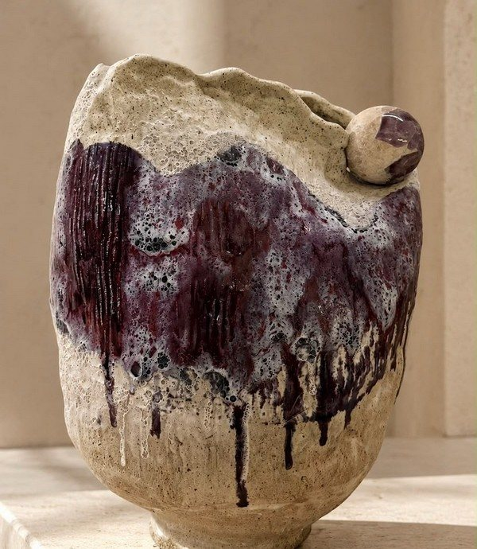
Antes de fotografar, pense na marca.
Identidade própria
Materiais naturais
Menos elementos
O feito à mão
A peça no ambiente
Mantenha essa combinação. É ela que faz o perfil parecer uma marca.
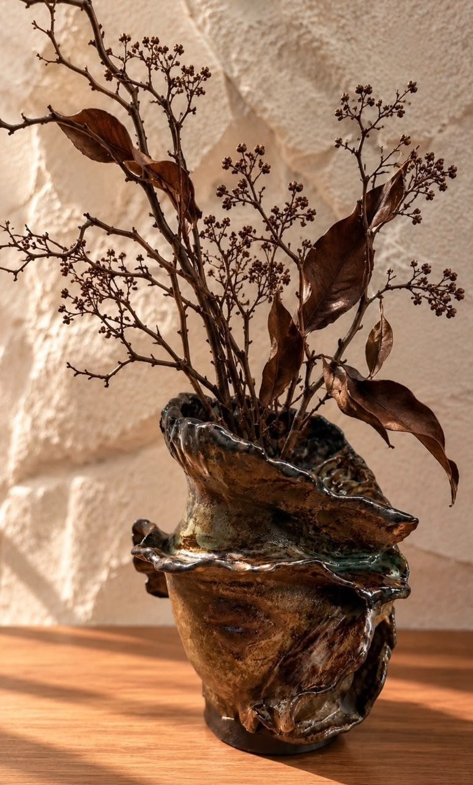
Tudo começa antes do clique.
Sempre o mesmo lugar, perto de uma janela.
Mesmo cenário gera um feed consistente.
Firmeza e mãos livres
Branca, devolve a luz
Deixa a luz mais suave
Lente sempre limpa
Coadjuvantes: a peça é sempre a estrela.
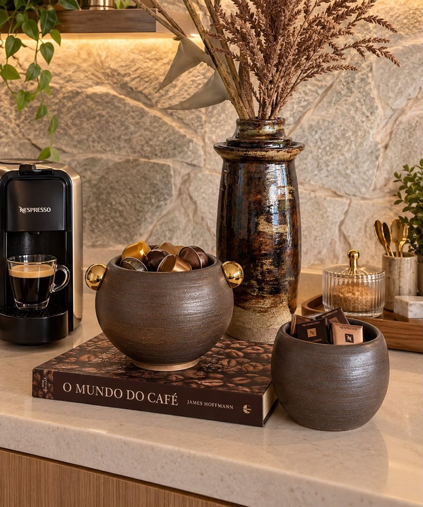
Com moderação.
Evite.
Dica: vire o rótulo para trás.
A luz decide tudo.
Use as duas, com intenção.
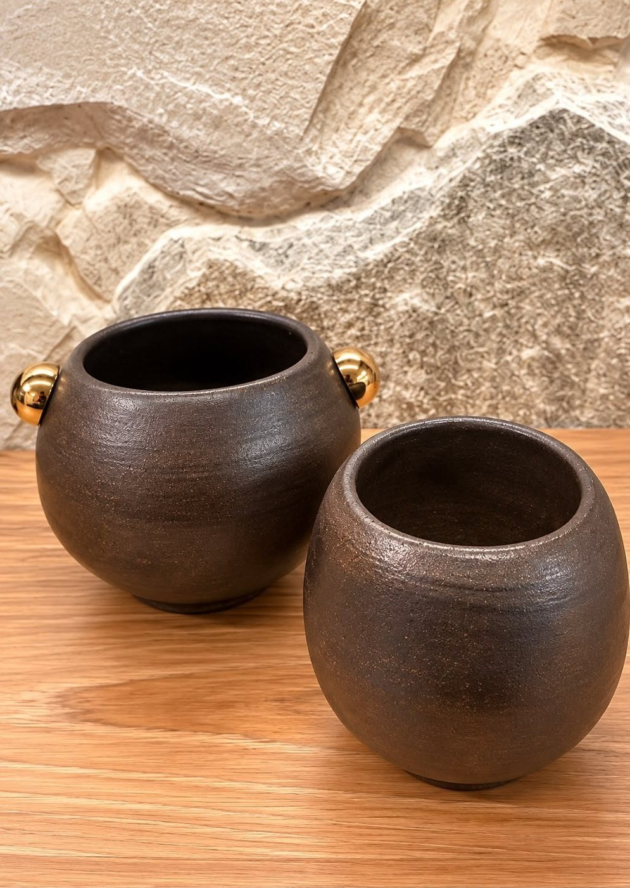
Janela com cortina ou dia nublado. Sombras leves.
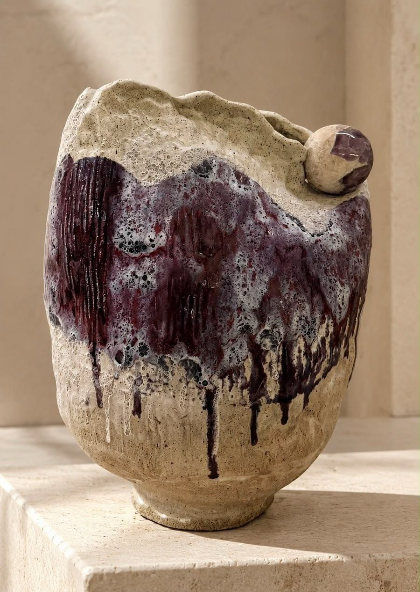
Sol batendo na peça. Sombras fortes e marcantes.
Mostra bem a cor, mas a peça perde profundidade.
Mostra bem a textura e os detalhes da peça.
Meio-termo: mostra a cor e a profundidade.
Destaca o contorno e faz o esmalte brilhar. Use a placa branca na frente.
Boa para fotos de cima. Na foto de frente, deixa sombra escura embaixo.
Coloque a placa branca do lado oposto à janela.
Ela devolve a luz e suaviza a sombra. Quanto mais perto da peça, mais forte o efeito.
Manhã, fim de tarde ou dia nublado.
Usando a janela? Não misture luzes.
Ele deixa a peça sem profundidade e cria manchas de brilho.
Use uma luminária de LED branca, ao lado da peça.
Um reflexo suave mostra o esmalte. Um reflexo grande esconde a peça.
Conheça sua ferramenta.
Use os botões de aproximação da tela.
Não tem 2×? Use 1× e chegue perto com o corpo.
A foto perde qualidade.
O fundo desfocado automático pode borrar as bordas da peça. Prefira o modo Foto.
Alguns celulares trocam de lente sozinhos. Confira se a peça não deformou.
Uma peça. Vários olhares.
Deixe espaço ao redor. Assim dá para recortar para o Feed e os Stories sem perder nada.
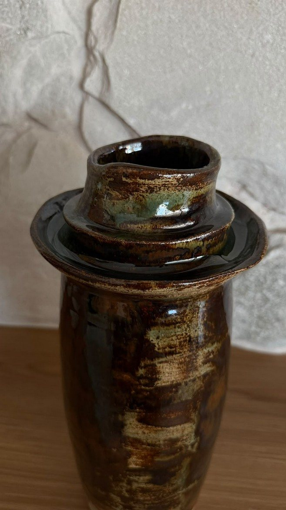
Alta e perto: peça cortada.
Na altura do meio, com espaço ao redor.
No Feed, a foto é um pouco vertical. Nos Stories e Reels, ocupa a tela toda. Deixe a peça longe das bordas: os botões do app cobrem essas áreas.
Movimento também mostra forma.
Para Reels e Stories
Escolha nas configurações de vídeo
Nitidez em primeiro lugar
Toque e segure na peça
Comece a gravar 2 s antes do movimento e pare 2 s depois.
Cada cena: de 5 a 15 segundos.
Caminhe devagar até a peça.
Do detalhe à peça inteira.
Celular paralelo à peça.
Celular parado, peça girando.
Grave a mesma cena de longe, de média distância e de perto. Quem edita terá mais opções.
Câmera parada: celular no tripé e só a ação se move.
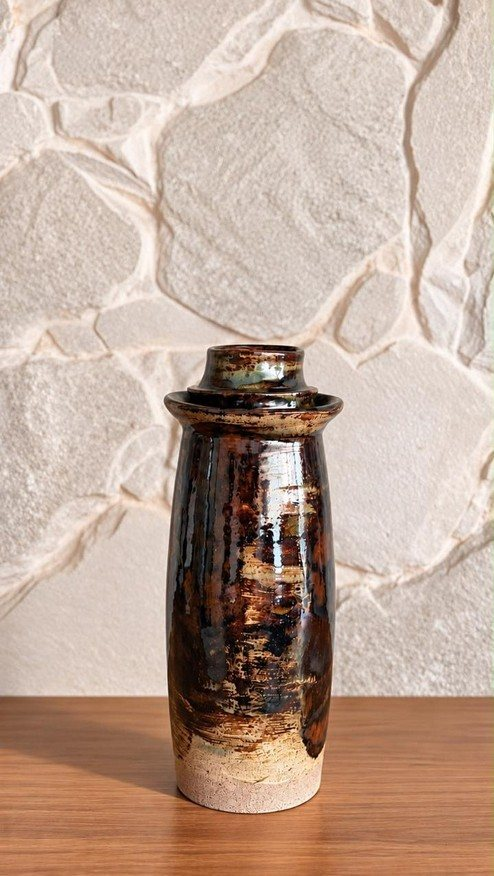
De longe
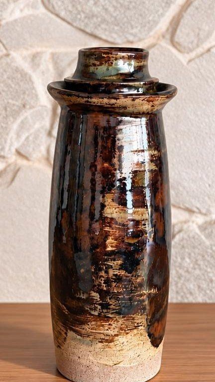
Média
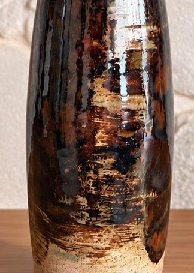
De perto
Modo Time-lapse, com o celular no tripé. Uma hora vira segundos.
Argila, pincel, forno abrindo. Evite conversa e música ao fundo.
Receitas prontas para gravar.
Comece pela imagem mais curiosa: o forno abrindo, o esmalte escorrendo, as mãos na argila.
Melhorar sem transformar.
Luz
Fundo
Nitidez
Cor
Formato
Textura e irregularidades
A irregularidade é a assinatura do artesanal. O cliente precisa receber o que viu.
Melhore esta foto de produto de uma peça de cerâmica artesanal.
Mantenha a peça EXATAMENTE igual: formato, bordas irregulares, cores do esmalte, textura e escorridos. Não adicione nem remova nada da peça.
Melhore apenas: luz natural suave e lateral, exposição, nitidez e fundo limpo [parede de pedra clara e madeira], com cores fiéis ao real.
Estilo natural e profissional, sem filtros e sem aparência artificial. Mesma proporção da foto original.